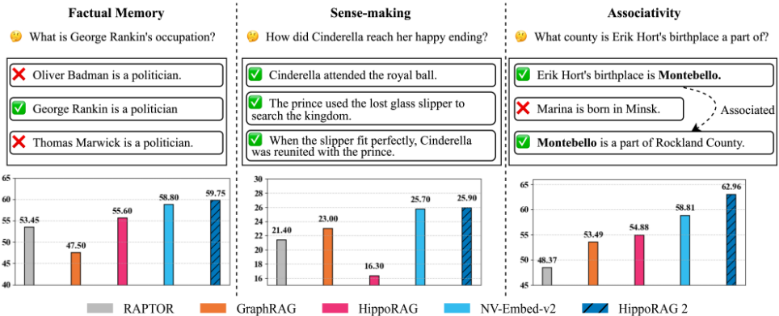
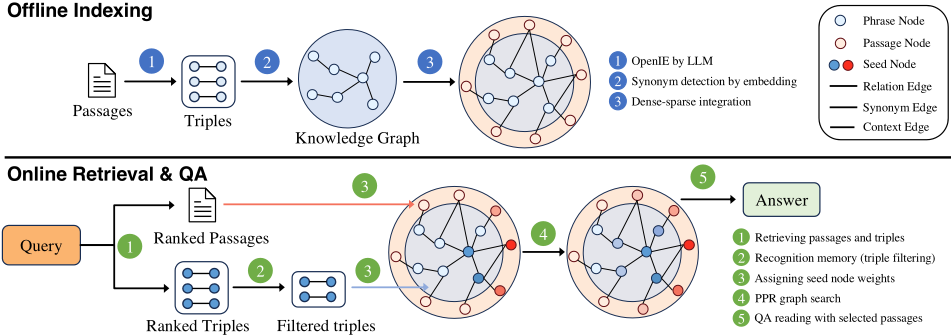
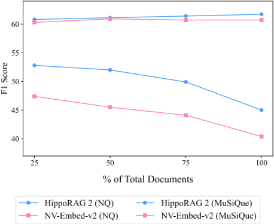

从 RAG 到记忆：面向大语言模型的非参数持续学习
RAG 是当前 LLM 引入新知识的事实标准，但纯向量检索难以支持多跳关联（associativity）与复杂语境理解（sense-making），而 GraphRAG、RAPTOR 等结构增强 RAG 又在简单事实问答上明显退化。论文提出 HippoRAG 2，在 HippoRAG 的 OpenIE 知识图 + Personalized PageRank 框架上做三项改进：将 passage 作为节点融入 KG 实现概念与上下文的 dense-sparse 融合、用 query-to-triple 替代 NER 实体链接、用 LLM 在线过滤 triples（recognition memory，prompt 由 DSPy MIPROv2 自动调优）。在事实、sense-making、associative 三类共 7 个基准上全面超越最强 embedding 检索器 NV-Embed-v2：associative 任务平均提升 7 个百分点，2Wiki F1 高 9.5%，且随语料增长优势保持稳定。成本上其 token 消耗与耗时远低于 GraphRAG/LightRAG，是结构增强 RAG 中唯一在性能上大幅超过标准 RAG 的方案，对团队知识库问答与 Agent 记忆系统的检索层设计有直接参考价值。
RAG 作为 LLM 非参数持续学习的主流方案，依赖简单向量检索，无法模拟人类长期记忆的两个关键特性：sense-making（理解更大、更复杂或不确定语境的能力）与 associativity（在离散知识间建立多跳连接的能力）；而已有结构增强 RAG（GraphRAG、RAPTOR、LightRAG、HippoRAG）虽在这两方面有改进，却在更基础的事实记忆任务上性能大幅低于标准 RAG。论文要解决这种"顾此失彼"的鲁棒性缺陷，构建在 factual、sense-making、associative 三类记忆任务上全面超越标准 RAG 的框架。
HippoRAG 2 延续 HippoRAG 的两阶段流程（离线索引 + 在线检索）：离线用 LLM 对每个 passage 做 OpenIE 抽取无 schema 三元组构建 KG，并用 embedding 检测同义词添加 synonym edge；在线以 seed nodes 驱动 Personalized PageRank（PPR）做上下文检索。三项关键改进：1) Dense-Sparse Integration——把每个 passage 作为 passage node 用 'contains' 边接入 KG，使概念（短语节点，稀疏编码）与上下文（passage 节点，稠密编码）共存于同一图；2) Deeper Contextualization——查询链接从 NER-to-node 改为 query-to-triple，用整句 query 匹配三元组以对齐查询意图；3) Recognition Memory——用 LLM 过滤检索到的 top-k triples（prompt 用 DSPy MIPROv2 自动调优），仅保留相关 triples 作为 PPR seed。passage 节点与短语节点的 reset 概率通过权重因子（默认 0.05）平衡。实现上用 Llama-3.3-70B-Instruct 做抽取与过滤、NV-Embed-v2 做检索、python-igraph 跑 PPR。
QA F1：associative 任务上平均比最强 embedding 检索器 NV-Embed-v2 高 7 个百分点，同时在事实与 sense-making 任务上无退化甚至略有提升
2Wiki 上 F1 比 NV-Embed-v2 高 9.5%，LV-Eval 上高 3.1%；使用 Llama-3.3-70B-Instruct 作 QA reader 时取得最高平均 F1
检索 Recall@5：MuSiQue 与 2Wiki 上分别比 NV-Embed-v2 高 5.0% 与 13.9%
消融：query-to-triple 链接比原 HippoRAG 的 NER-to-node 平均提升 Recall@5 12.5%
持续学习实验：NQ 与 MuSiQue 分 4 段递增语料时，HippoRAG 2 对 NV-Embed-v2 的优势保持一致
成本（MuSiQue 语料 11k 文档）：token 消耗远低于 LightRAG 与 GraphRAG，速度快于二者，仅略慢于 RAPTOR 与 HippoRAG；是唯一在性能上大幅超越标准 RAG 的结构增强方法
错误分析（100 个 recall@5<1.0 样本）：triple filtering 后 18% 样本剩余零 triples；graph search 是主要错误来源（50% 样本中至少一半链接短语出现在支持文档中但最终 top-5 仍不理想）
与 GraphRAG/LightRAG/RAPTOR 等把 LLM 生成结构（摘要/KG）作为检索语料扩展不同，HippoRAG 2 的 KG 仅用于辅助检索过程而非扩展检索语料，从而减少 LLM 生成噪声对简单与多跳 QA 的伤害；与 HippoRAG 相比，通过 passage 节点融入上下文、query-to-triple 深度上下文化、LLM recognition memory 三项改进，弥补了其实体中心方法在索引与推理时的上下文丢失与语义匹配困难；论文还在同一评测框架下同时覆盖 factual、sense-making、associative 三类任务，揭示了此前结构增强方法在自身实验设置之外性能大幅衰减的问题。
相关度级别：high
命中能力域：3.1 上下文工程与记忆 | 3.5 评测与可靠使用
理由：论文核心贡献是 RAG/检索增强与 LLM 长期记忆系统，直接命中 3.1 的核心技术（RAG/检索增强、Agent 记忆系统、结构化上下文组织、上下文在生产系统中的管理）；同时其评测方法论（跨三类任务的鲁棒性评测、token/时间/内存成本对比、模拟语料增长的持续学习实验）与 3.5（评测基准与方法、成本与效率优化）高度相关。团队构建知识库问答与 Agent 记忆时，如何在多跳关联检索与简单事实检索之间不"顾此失彼"正是论文解决的核心问题；其"KG 应用于辅助检索而非扩展语料"的结论对团队评估 GraphRAG 类方案有直接警示与参考价值。
建议动作：深入精读并做内部分享
arXiv:2502.14802v2 [cs.CL] 2025年6月19日
Bernal Jim´ enez Guti´ errez * 1 Yiheng Shu * 1 Weijian Qi 1 Sizhe Zhou 2 Yu Su 1
持续获取、组织并运用知识的能力是人类智能的一项关键特征，AI 系统必须接近这一能力才能充分释放其潜力。鉴于大语言模型（LLM）在持续学习方面面临的挑战，检索增强生成（RAG）已成为引入新信息的主流方式。然而，其对向量检索的依赖阻碍了它模拟人类长期记忆那种动态且相互关联特性的能力。近期的 RAG 方法利用知识图谱等各类结构对向量嵌入进行增强，以弥补其中的一部分差距，即意义建构（sense-making）与联想性。然而，这些方法在更为基础的事实记忆任务上的性能却大幅下滑，显著低于标准 RAG。我们着手解决这一非预期的性能退化问题，并提出 HippoRAG 2——一个在事实、意义建构与联想记忆任务上全面超越标准 RAG 的框架。HippoRAG 2 以 HippoRAG 中所使用的 Personalized PageRank 算法为基础，并通过更深度的段落整合和更有效的 LLM 在线运用对其加以增强。这种组合使该 RAG 系统在有效性上更接近人类长期记忆，在联想记忆任务上较最先进的嵌入模型取得了 7% 的提升，同时还展现出更优越的事实知识与意义建构记忆能力。这项工作为 LLM 的非参数化持续学习铺平了道路。代码和数据可在 https://github.com/OSU-NLP-Group/HippoRAG 获取。
* 同等贡献 1 俄亥俄州立大学（The Ohio State University），美国俄亥俄州哥伦布市 2 伊利诺伊大学厄巴纳-香槟分校（University of Illinois Urbana-Champaign），美国伊利诺伊州。通信作者：Bernal Jiménez Gutiérrez < jimenezgutierrez.1@osu.edu > 、Yiheng Shu < shu.251@osu.edu > 、Yu Su < su.809@osu.edu > 。
《第 42 届国际机器学习会议论文集》（Proceedings of the 42nd International Conference on Machine Learning），加拿大温哥华。PMLR 267，2025。2025 年版权归作者所有。
在不断演化的世界中，持续吸收、整合并运用知识的能力是人类智能最重要的特征之一。从应对不断变化的法律框架的律师，到追踪多维度科学进展的研究人员，我们的许多生产力都依赖于这种令人惊叹的持续学习能力。AI 系统若要成为真正有用的人类水平助手，就必须逼近这种能力。
近年来，大语言模型（LLM）在人类智能的许多方面取得了显著进展。然而，由于这些模型的参数化知识具有复杂的分布特性，赋予它们人类那种不断演化的长期记忆能力的努力，在充分吸收新知识（Zhong et al., 2023; Hoelscher-Obermaier et al., 2023）和避免灾难性遗忘（Cohen et al., 2024; Gu et al., 2024）两个方面都面临重大挑战。检索增强生成（RAG）应运而生，成为绕过这些障碍的一种途径，使 LLM 能够以非参数化的方式访问新信息，而无需改变 LLM 的参数化表示。凭借其简洁性与鲁棒性（Zhong et al., 2023; Xie et al., 2024），RAG 已迅速成为生产级 LLM 系统事实上的持续学习解决方案。然而，它们对简单向量检索的依赖，导致无法捕捉我们相互关联的长期记忆系统中两个至关重要的方面：意义建构（sense-making）（Klein et al. (2006)；解释更大、更复杂或不确定情境的能力）和联想性（associativity）（Suzuki (2005)；在不同知识片段之间建立多跳连接的能力）。
为解决上述局限，近期已有若干让 LLM 显式地为其检索语料库构建结构的 RAG 框架被提出。为增强意义建构，这类结构增强的 RAG 方法允许 LLM 生成摘要（Edge et al., 2024; Sarthi et al., 2024; Chen et al., 2023）或知识图谱（KG）结构（Guo et al., 2024），以将多组彼此不同却相互关联的段落链接起来，从而提升 RAG 系统理解更长、更复杂语篇（例如长篇故事）的能力。为弥补联想性方面的差距，HippoRAG 的作者（Guti´ errez et al., 2024）利用 Personalized PageRank 算法（Haveliwala, 2002）以及 LLM 自动构建 KG 的能力，为检索过程赋予了多跳推理能力。

尽管这些方法在这两项更具挑战性的记忆任务上都展现出了强大的性能，但要使检索增强生成（RAG）真正更接近人类长期记忆，还需要它在更简单的记忆任务上也具备鲁棒性。为了了解这些系统能否实现这样的鲁棒性，我们开展了全面的实验：不仅通过多跳问答（multi-hop QA）和大规模语篇理解同时评估它们的联想能力与意义建构能力，还通过简单问答任务测试它们的事实记忆能力，而简单问答任务正是标准 RAG 已经能够轻松应对的。
如图 1 所示，我们的评估表明，此前所有结构增强方法在全部三类基准测试（benchmark）上的表现均不及现有最强的基于嵌入的 RAG 方法。或许并不令人意外，我们发现每类方法都在其自身实验设置之外的任务上出现了最大的性能衰减。例如，HippoRAG 由于缺乏基于查询的上下文关联，其性能在大规模语篇理解上下降最多；而 RAPTOR 由于其大语言模型（LLM）摘要机制向检索语料库中引入了噪声，在简单问答和多跳问答任务上的性能大幅下降。
在本工作中，我们利用这一实验设置来帮助解决这些创新方法的鲁棒性局限，同时避免陷入过于狭隘地只关注单一任务的陷阱。我们提出的方法 HippoRAG 2 既利用了 HippoRAG 的 OpenIE 和个性化 PageRank（Personalized PageRank, PPR）方法的优势，又通过以下方式解决了其在基于查询的上下文关联方面的局限：将段落整合到 PPR 图搜索过程中，让查询更深入地参与知识图谱（KG）三元组的选择，并在在线检索过程中引入 LLM 来识别检索到的三元组何时无关。
通过大量实验，我们发现这一设计使 HippoRAG 2 在各个方面都取得了相对于最强标准 RAG 方法的一致性能提升。更具体而言，我们的方法在联想任务上比标准 RAG 平均提升 7 个点，同时在事实记忆和意义建构任务上没有出现性能下降，甚至还有轻微提升。此外，我们表明我们的方法对不同的检索器以及使用强大的开源与专有 LLM 都具有鲁棒性，从而提供了很大程度的使用灵活性。所有这些结果表明，HippoRAG 2 是开发面向 LLM 的更类人非参数持续学习系统道路上有前景的一步。
随着大语言模型（LLM）在实际应用中的使用不断增长，它们随时间推移获取并整合新知识、同时保留过去信息的能力变得日益重要——这一方向上的众多基准测试工作（Zhong et al., 2023; Liska et al., 2022; Kim et al., 2024; Roth et al., 2024; Li et al., 2024）便是明证。鉴于全规模 LLM 预训练的高昂计算成本，人们已利用多种技术来赋予这些模型这种持续学习能力。这些方法大致可分为三类：持续微调、模型编辑和检索增强生成（RAG）(Shi et al., 2024)。
持续微调是指定期在新数据上训练 LLM。这可以通过持续预训练（Jin et al., 2022）、指令微调（Zhang et al., 2023）和对齐微调（Zhang et al., 2024）等方法来实现。尽管持续微调能够有效融入新的语言模式和推理技能，但它存在灾难性遗忘（Huang et al., 2024）问题，即随着新数据的引入，先前学到的知识会丢失。此外，其高昂的计算开销使得频繁更新对于实际应用而言并不切实可行。
模型编辑技术（Yao et al., 2023）提供了一种更为轻量级的替代方案，通过直接修改模型中的特定参数来更新其知识。然而，研究发现这类更新高度局部化，对与该更新相关联、本应一并更改的信息几乎没有影响。
RAG 已成为一种可扩展且实用的持续学习替代方案。RAG 不修改 LLM 本身，而是在推理时检索相关的外部信息，从而能够实时适应新知识。我们将在下一节讨论这种面向 LLM 的非参数持续学习解决方案的若干方面。
编码器模型的改进，尤其是采用 LLM 骨干（backbone）的改进，通过生成能更好捕捉语义关系的高质量嵌入（embedding），显著增强了 RAG 系统，从而提升了面向 LLM 生成的检索质量。近期的模型（Li et al., 2023; Muennighoff et al., 2025; Lee et al., 2025）利用 LLM、大规模语料库、改进的架构以及指令微调，取得了显著的检索性能提升。NV-Embed-v2（Lee et al., 2025）在本文中作为主要对比方法。
意义建构（sense-making）是指理解大规模或复杂事件、经验或数据的能力（Koli et al., 2024）。标准 RAG 方法在这方面的能力有限，因为它们需要整合来自不同段落的信息，因此已有若干 RAG 框架被提出来解决这一问题。RAPTOR（Sarthi et al., 2024）和 GraphRAG（Edge et al., 2024）都会生成整合其检索语料库的摘要。然而，二者在确定摘要对象及摘要粒度方面遵循不同的流程。RAPTOR 使用高斯混合模型（Gaussian Mixture Model）来检测待摘要的文档簇，而 GraphRAG 则使用图社区检测算法，可以对文档、带关系的实体簇或这些元素的组合进行摘要。LightRAG（Guo et al., 2024）采用双层检索机制，以增强其在低层与高层知识两个层面上的综合信息检索能力，并将图结构与向量检索相结合。
尽管 GraphRAG 和 LightRAG 都像我们的 HippoRAG 2 方法一样使用了知识图谱（KG），但我们的 KG 是用于辅助检索过程，而非扩展检索语料库本身。这使得 HippoRAG 2 引入的 LLM 生成噪声更少，而这类噪声会降低这些方法在单跳和多跳问答（QA）任务中的性能。
联想性（associativity）是指在互不相关的事实之间建立多跳连接以实现高效检索的能力。它是持续学习的重要组成部分，而标准 RAG 由于依赖独立的向量检索，无法模拟这一能力。HippoRAG（Gutiérrez et al., 2024）是唯一通过在显式构建的开放 KG 上利用 PPR 算法来应对这一特性的 RAG 框架。HippoRAG 2 紧密借鉴了 HippoRAG，这使其在多跳 QA 任务上表现非常出色。然而，它对段落、查询和三元组更全面的整合，使其在意义建构和事实记忆任务上也能有更全面的表现。
HippoRAG (Guti´ errez et al., 2024) is a neurobiologically inspired long-term memory framework for LLMs in which each component is inspired by its neurobiological analog for human memory. The framework consists of three primary components: 1) an LLM that acts as an artificial neocortex, 2) a KG and the Personalized PageRank algorithm to mirror the auto-associative qualities of the hippocampus and 3) a retrieval encoder that links these two components, reflecting one of the functions of the parahippocampal regions. These components collaborate to replicate the interactions observed in human long-term memory.
HippoRAG's offline indexing process uses an LLM to process passages into KG triples, which are then incorporated into the KG, our artificial hippocampal index. Meanwhile, the retrieval encoder is responsible for detecting synonymy to interconnect information. In HippoRAG's online retrieval process, the LLM neocortex extracts named entities from a query while the retrieval encoder finds their most similar counterparts in the KG. Then, the nodes in the KG corresponding to these entities, which we refer to as seed nodes, are used to run the Personalized PageRank (PPR) algorithm. More specifically, these seed nodes are used to assign the reset probabilities within PPR, which alter the original PageRank algorithm to distribute probability towards the seed nodes and their neighborhoods, enabling HippoRAG's context-based retrieval. Although HippoRAG seeks to construct memory from non-parametric RAG, its effectiveness From RAG to Memory: Non-Parametric Continual Learning for Large Language Models is hindered by a critical flaw: an entity-centric approach that causes context loss during both indexing and inference, as well as difficulties in semantic matching.

This is a reference font size of the main body Built on the neurobiologically inspired long-term memory framework proposed in HippoRAG (Guti´ errez et al., 2024), the structure of HippoRAG 2 follows a similar two-stage process: offline indexing and online retrieval, as shown in Figure 2. Additionally, however, HippoRAG 2 introduces several key refinements that improve its alignment with human memory mechanisms: 1) It seamlessly integrates conceptual and contextual information within the KG, enhancing the comprehensiveness and atomicity of the constructed index (§3.2). 2) It facilitates more context-aware retrieval by leveraging the KG structure beyond isolated KG nodes (§3.3). 3) It incorporates recognition memory to improve seed node selection for graph search (§3.4). In the following sections, we introduce the pipeline in more detail and elaborate on each of these refinements.
离线索引。1) HippoRAG 2 与 HippoRAG 一样，利用大语言模型（LLM）通过 OpenIE 从每个段落中抽取三元组，这使得关系和实体可以在没有任何约束或模式（schema）的情况下生成。这些三元组随后被组织到我们的无模式 KG（即海马索引，hippocampal index）中。我们将这些三元组的主语或宾语称为短语（phrase），将连接它们的边称为关系边（relation edge）。2) 接下来，检索编码器通过评估 KG 中的短语对来识别同义词，检测其中向量相似度高于预定义阈值的短语对，并在这类短语对之间添加同义词边（synonym edge）。这一过程使 KG 能够跨不同段落链接同义词，从而在学习过程中促进新旧知识的整合。3)
最后，这一基于短语的 KG 与原始段落相结合，使最终的开放 KG 能够同时纳入概念信息和上下文信息（§3.2）。
在线检索。1) 利用编码器将查询与相关的三元组和段落进行链接，识别出可用作图搜索种子节点的节点（§3.3）。2) 在三元组链接过程中，识别记忆（recognition memory）充当过滤器，确保从检索到的集合中仅保留相关的三元组作为最终种子节点（§3.4）。3) 随后，这些最终种子节点被用于在 PPR 算法中分配重置概率，从而实现其上下文感知检索，并对链接结果进行细化，以检索出最相关的段落。4) 最后，检索到的段落作为最终的 QA 任务的上下文输入。接下来，我们将更详细地描述 HippoRAG 2 中的每一项改进。
HippoRAG 的知识图谱（KG）中的节点主要由描述概念的短语组成，我们在本文中将这些节点称为短语节点（phrase nodes）。这种图结构带来了与概念-上下文权衡（concept-context tradeoff）相关的局限性。概念简洁且易于泛化，但往往会导致信息损失。相比之下，上下文提供了塑造概念解释与应用的具体情境，虽然丰富了语义，却增加了复杂性。然而，在人类记忆中，概念与上下文是错综复杂地相互交织的。稠密编码与稀疏编码理论（dense and sparse coding theory）为理解大脑如何在不同粒度上表示和处理信息提供了洞见（Beyeler et al., 2019）。稠密编码（dense coding）通过大量神经元的同时激活来编码信息，从而形成分布式且冗余的表示；相反，稀疏编码（sparse coding）则依赖于最小化的神经激活，仅激活一小部分神经元，以提高效率和存储紧凑性。
受人类大脑中稠密-稀疏整合机制的启发，我们将短语节点视为对所提取概念的一种稀疏编码形式，同时将稠密编码融入我们的 KG 中，以表示这些概念所源自的上下文。首先，我们采用与短语编码方式类似的编码方法，即使用嵌入模型（embedding model）进行编码。随后，这两种编码以特定方式在 KG 中加以整合。与 HippoRAG 中的文档集成（document ensemble）只是简单地将图搜索与嵌入匹配的分数进行聚合不同，我们通过引入段落节点（passage nodes）来增强 KG，从而实现上下文信息的更无缝整合。这一方法保留了与 HippoRAG 相同的离线索引流程，同时在图构建过程中通过添加与段落相关的节点和边来丰富图结构。具体而言，语料库中的每个段落都被视为一个段落节点，并通过标记为 'contains' 的上下文边将该段落与源自该段落的所有短语连接起来。
在关于概念-上下文权衡的讨论基础上，我们观察到 HippoRAG 中的查询解析依赖于命名实体识别（Named Entity Recognition, NER），主要以概念为中心，往往忽略了 KG 内部的上下文对齐。这种以实体为中心的抽取与索引方式带来了对概念的强烈偏向，使许多上下文信号未被充分利用（Gutiérrez et al., 2024）。为解决这一局限，我们探索并评估了将查询链接到 KG 的不同方法，旨在更有效地将查询语义与图搜索的起始节点对齐。具体而言，我们考虑了三种方法：1) NERtoNode：这是 HippoRAG 最初使用的方法，即从查询中抽取实体，随后利用文本嵌入将其与 KG 中的节点进行匹配。2) Query to Node：我们不抽取单个实体，而是利用文本嵌入将整个查询直接与 KG 中的节点进行匹配。3) Query to Triple：为了纳入来自 KG 的更丰富的上下文信息，我们利用文本嵌入将整个查询与图中的三元组进行匹配。由于三元组封装了概念之间基本的上下文关系，该方法能够更全面地理解查询的意图。默认情况下，HippoRAG 2 采用查询到三元组（query-to-triple）的方法，我们稍后（§6.1）对这三种方法进行评估。
回忆（recall）与再认（recognition）是人类记忆检索中两个互补的过程（Uner & Roediger III, 2022）。回忆是指在没有外部线索的情况下主动检索信息，而再认则依靠外部刺激的帮助来识别信息。受此启发，我们将查询到三元组检索建模为一个两步过程。1) Query to Triple：我们使用嵌入模型按照 §3.3 中所述检索图中的 top-k 个三元组 T。2) Triple Filtering：我们使用 LLM 对检索到的 T 进行过滤，生成三元组 T ′ ⊆ T。详细的提示词见附录 A。
在介绍完上述改进之后，我们总结 HippoRAG 2 中的在线检索过程。该任务涉及为检索选择种子节点并分配重置概率。HippoRAG 2 从由 query-to-triple 和再认记忆生成的过滤后三元组中识别短语节点。如果没有可用的三元组，它将直接使用嵌入模型检索排名靠前的段落。否则，根据短语节点在其所来源的过滤后三元组中的平均排名分数，最多选择 k 个短语节点。所有段落节点也被作为种子节点，因为更广泛的激活能够改善多跳推理。短语节点的重置概率基于排名分数进行分配，而段落节点获得的分数与其嵌入相似度成正比，并经权重因子（§6.2）调整，以平衡短语节点与段落节点之间的影响。随后执行 PPR 搜索，并根据 PageRank 分数对段落进行排序，排名靠前的段落用于下游问答（QA）。该流程的示例见附录 B，PPR 初始化的详细内容见附录 G.1。
我们选取三种不同类型的基线方法进行比较。我们纳入了三个简单的基线：经典的 BM25（Robertson & Walker, 1994）基线，以及 Contriever（Izacard et al., 2022）和 GTR（Ni et al., 2022）这两种流行的稠密嵌入检索器。
我们的第二类基线包括一些现有规模最大的嵌入模型（7B），它们在 BEIR 排行榜（Thakur et al., 2021）上展现出强劲性能：Alibaba-NLP/GTE-Qwen2-7B-Instruct（Li et al., 2023）、GritLM/GritLM-7B（Muennighoff et al., 2025）以及 nvidia/NV-Embed-v2（Lee et al., 2025）。
在最后一类基线中，我们纳入了四种结构增强的 RAG 方法。RAPTOR（Sarthi et al., 2024）基于语义相似度将检索语料库组织成层次化结构。GraphRAG（Edge et al., 2024）和 LightRAG（Guo et al., 2024）利用与我们类似的知识图谱（KG）结构，为语料库中出现的概念生成高层次摘要。最后，HippoRAG（Gutiérrez et al., 2024）同样使用了 KG，但其通过 PPR 而非摘要的方式来整合知识。
| NQ | PopQA | MuSiQue | 2Wiki | HotpotQA | LV-Eval | NarrativeQA | |
|---|---|---|---|---|---|---|---|
| Num of queries | 1 , 000 | 1 , 000 | 1 , 000 | 1 , 000 | 1 , 000 | 124 | 293 |
| Num of passages | 9 , 633 | 8 , 676 | 11 , 656 | 6 , 119 | 9 , 811 | 22 , 849 | 4 , 111 |
| | NQ | PopQA | MuSiQue | 2Wiki | HotpotQA | LV-Eval | NarrativeQA |
遵循 HippoRAG (Guti´ errez et al., 2024) 的做法，我们使用 passage recall@5 来评估检索任务。对于问答（QA）任务，我们遵循 MuSiQue (Trivedi et al., 2022) 的评估指标来计算基于 token 的 F1 分数。
对于 HippoRAG 2，我们使用开源的 Llama-3.3-70B-Instruct（AI@Meta, 2024）同时作为抽取（NER 和 OpenIE）与三元组过滤模型，并使用 nvidia/NVEmbed-v2 作为检索器。为了进行公平比较，我们还使用相同的抽取器和检索器复现了作为对比方法的结构增强 RAG 方法。对于三元组过滤器，我们使用 DSPy（Khattab et al., 2024）的 MIPROv2 优化器和 Llama-3.3-70B-Instruct 来调优提示词，包括其中的指令和示例。最终得到的提示词见附录 A。我们使用由检索器排序的前 5 个三元组进行过滤。我们的 QA 模块将检索到的前 5 个段落作为上下文，供 LLM（GPT-4o-mini 或 Llama-3.3-70B-Instruct）生成最终答案。在超参数方面，我们遵循 HippoRAG 的默认设置。更多实现和超参数细节可参见附录 G。
我们现在展示主要的问答（QA）与检索实验结果，其中 QA 过程将检索到的结果用作其上下文。更详细的实验结果见附录 C。所有已构建知识图谱（KG）的统计信息见附录 A。
6
| Retrieval | Simple QA.NQ | Simple QA.PopQA | Multi-Hop.MuSiQue | Multi-Hop.2Wiki | QA.HotpotQA | Multi-Hop.LV-Eval | Discourse Understanding.NarrativeQA | Avg |
|---|---|---|---|---|---|---|---|---|
| Simple Baselines | Simple Baselines | Simple Baselines | Simple Baselines | Simple Baselines | Simple Baselines | Simple Baselines | Simple Baselines | Simple Baselines |
| None | 54 . 9 | 32 . 5 | 26 . 1 | 42 . 8 | 47 . 3 | 6 . 0 | 12 . 9 | 38 . 4 |
| Contriever (Izacard et al., 2022) | 58 . 9 | 53 . 1 | 31 . 3 | 41 . 9 | 62 . 3 | 8 . 1 | 19 . 7 | 46 . 9 |
| BM25 (Robertson &Walker, 1994) | 59 . 0 | 49 . 9 | 28 . 8 | 51 . 2 | 63 . 4 | 5 . 9 | 18 . 3 | 47 . 7 |
| GTR (T5-base) (Ni et al., 2022) | 59 . 9 | 56 . 2 | 34 . 6 | 52 . 8 | 62 . 8 | 7 . 1 | 19 . 9 | 50 . 4 |
| Large Embedding Models | Large Embedding Models | Large Embedding Models | Large Embedding Models | Large Embedding Models | Large Embedding Models | Large Embedding Models | Large Embedding Models | Large Embedding Models |
| GTE-Qwen2-7B-Instruct (Li et al., 2023) | 62 . 0 | 56 . 3 | 40 . 9 | 60 . 0 | 71 . 0 | 7 . 1 | 21 . 3 | 54 . 9 |
| GritLM-7B (Muennighoff et al., 2025) | 61 . 3 | 55 . 8 | 44 . 8 | 60 . 6 | 73 . 3 | 9 . 8 | 23 . 9 | 56 . 1 |
| NV-Embed-v2 (7B) (Lee et al., 2025) | 61 . 9 | 55 . 7 | 45 . 7 | 61 . 5 | 75 . 3 | 9 . 8 | 25 . 7 | 57 . 0 |
| Structure-Augmented RAG | Structure-Augmented RAG | Structure-Augmented RAG | Structure-Augmented RAG | Structure-Augmented RAG | Structure-Augmented RAG | Structure-Augmented RAG | Structure-Augmented RAG | Structure-Augmented RAG |
| RAPTOR (Sarthi et al., 2024) | 50 . 7 | 56 . 2 | 28 . 9 | 52 . 1 | 69 . 5 | 5 . 0 | 21 . 4 | 48 . 8 |
| GraphRAG (Edge et al., 2024) | 46 . 9 | 48 . 1 | 38 . 5 | 58 . 6 | 68 . 6 | 11 . 2 | 23 . 0 | 49 . 6 |
| LightRAG (Guo et al., 2024) | 16 . 6 | 2 . 4 | 1 . 6 | 11 . 6 | 2 . 4 | 1 . 0 | 3 . 7 | 6 . 6 |
| HippoRAG (Guti´ errez et al., 2024) | 55 . 3 | 55 . 9 | 35 . 1 | 71 . 8 | 63 . 5 | 8 . 4 | 16 . 3 | 53 . 1 |
| HippoRAG 2 | 63 . 3 † | 56 . 2 | 48 . 6 † | 71 . 0 † | 75 . 5 | 12 . 9 † | 25 . 9 | 59 . 8 |
| Retrieval | Simple QA.NQ | Simple QA.PopQA | Multi-Hop.MuSiQue | Multi-Hop.2Wiki | QA.HotpotQA | Multi-Hop.LV-Eval | Discourse Understanding.NarrativeQA | Avg |
| Retrieval | Simple QA.NQ | Simple QA.PopQA | Multi-Hop QA.MuSiQue | Multi-Hop QA.2Wiki | Multi-Hop QA.HotpotQA | Avg |
|---|---|---|---|---|---|---|
| Simple Baselines | Simple Baselines | Simple Baselines | Simple Baselines | Simple Baselines | Simple Baselines | Simple Baselines |
| BM25 (Robertson &Walker, 1994) | 56 . 1 | 35 . 7 | 43 . 5 | 65 . 3 | 74 . 8 | 55 . 1 |
| Contriever (Izacard et al., 2022) | 54 . 6 | 43 . 2 | 46 . 6 | 57 . 5 | 75 . 3 | 55 . 4 |
| GTR (T5-base) (Ni et al., 2022) | 63 . 4 | 49 . 4 | 49 . 1 | 67 . 9 | 73 . 9 | 60 . 7 |
| Large Embedding Models | Large Embedding Models | Large Embedding Models | Large Embedding Models | Large Embedding Models | Large Embedding Models | Large Embedding Models |
| GTE-Qwen2-7B-Instruct (Li et al., 2023) | 74 . 3 | 50 . 6 | 63 . 6 | 74 . 8 | 89 . 1 | 70 . 5 |
| GritLM-7B (Muennighoff et al., 2025) | 76 . 6 | 50 . 1 | 65 . 9 | 76 . 0 | 92 . 4 | 72 . 2 |
| NV-Embed-v2 (7B) (Lee et al., 2025) | 75 . 4 | 51 . 0 | 69 . 7 | 76 . 5 | 94 . 5 | 73 . 4 |
| Structure-Augmented RAG | Structure-Augmented RAG | Structure-Augmented RAG | Structure-Augmented RAG | Structure-Augmented RAG | Structure-Augmented RAG | Structure-Augmented RAG |
| RAPTOR (Sarthi et al., 2024) | 68 . 3 | 48 . 7 | 57 . 8 | 66 . 2 | 86 . 9 | 65 . 6 |
| HippoRAG* (Guti´ errez et al., 2024) | - | - | 51 . 9 | 89 . 1 | 77 . 7 | - |
| HippoRAG (reproduced) | 44 . 4 | 53 . 8 | 53 . 2 | 90 . 4 | 77 . 3 | 63 . 8 |
| HippoRAG 2 | 78 . 0 | 51 . 7 | 74 . 7 | 90 . 4 | 96 . 3 | 78 . 2 |
| Retrieval | Simple QA.NQ | Simple QA.PopQA | Multi-Hop QA.MuSiQue | Multi-Hop QA.2Wiki | Multi-Hop QA.HotpotQA | Avg |
问答性能。表 2 展示了在以 Llama-3.3-70B-Instruct 作为 QA 阅读器的情况下，各种检索器在多个检索增强生成（RAG）基准测试上的问答性能。HippoRAG 2 取得了最高的平均 F1 分数，在不同设置下均展现出鲁棒性。大型嵌入模型优于较小的模型，其中 NV-Embed-v2（7B）平均比 GTR（T5-base）高出 6.6%。这些模型还以更低的计算成本超越了结构增强的 RAG 方法，但它们主要在简单问答中表现出色，而在复杂情形下则表现吃力。值得注意的是，HippoRAG 2 在 2Wiki 上的 F1 比 NV-Embed-v2 高出 9.5%，在颇具挑战性的 LV-Eval 数据集上高出 3.1%。与 HippoRAG 相比，HippoRAG 2 带来了更为显著的提升，验证了其受神经心理学启发的方法。这些结果凸显了 HippoRAG 2 作为最先进 RAG 系统的地位：它同时提升了检索与问答性能，而实际上由一个开源模型驱动。附录 C 中的表 8 给出了以 Llama 或 GPT-4o-mini 作为 QA 阅读器、并结合抽取器或三元组过滤器时的额外问答结果（EM 和 F1）。GPT-4o-mini 呈现出与 Llama 一致的趋势：在大多数情况下 NV-Embed-v2 优于结构增强方法，唯一的例外是多跳问答中的 HippoRAG。HippoRAG 2 在几乎所有设置中都始终优于所有其他方法。关于每种方法所需计算资源（token 数、时间和内存）的分析见附录 F。
7
| MuSiQue | 2Wiki | HotpotQA | Avg | |
|---|---|---|---|---|
| HippoRAG 2 | 74 . 7 | 90 . 4 | 96 . 3 | 87 . 1 |
| w/ NER to node | 53 . 8 | 91 . 2 | 78 . 8 | 74 . 6 |
| w/ Query to node | 44 . 9 | 65 . 5 | 68 . 3 | 59 . 6 |
| w/o Passage Node | 63 . 7 | 90 . 3 | 88 . 9 | 81 . 0 |
| w/o Filter | 73 . 0 | 90 . 7 | 95 . 4 | 86 . 4 |
| | MuSiQue | 2Wiki | HotpotQA | Avg |
| Weight | 0 . 01 | 0 . 05 | 0 . 1 | 0 . 3 | 0 . 5 |
|---|---|---|---|---|---|
| MuSiQue | 79 . 9 | 80 . 5 | 79 . 8 | 78 . 4 | 77 . 9 |
| NQ | 75 . 6 | 76 . 9 | 76 . 9 | 76 . 7 | 76 . 4 |
| Weight | 0 . 01 | 0 . 05 | 0 . 1 | 0 . 3 | 0 . 5 |
检索性能。我们在表 3 中报告了带有支持段落标注的数据集以及显式检索段落的模型的检索结果。大型嵌入模型（7B）显著优于 Contriever 和 GTR 等经典的基于语言模型（LM）的小型模型，F1 分数至少高出 9.8%。虽然我们使用 Llama-3.3-70B-Instruct 和 NV-Embed-v2 对 HippoRAG 进行的复现结果略优于原论文，但提升微乎其微，F1 仅提高了 1.3%。尽管 HippoRAG 在以实体为中心的检索中表现出色，在 PopQA 上取得了最高的 recall@5，但它总体上落后于近期的稠密检索器和 HippoRAG 2。值得注意的是，HippoRAG 2 在大多数数据集上都取得了最高的召回率分数；与最强的稠密检索器 NV-Embed-v2 相比，其在 MuSiQue 和 2Wiki 上的 Recall@5 分别大幅提升了 5.0% 和 13.9%。
我们针对所提出的链接方法、图构建方法和三元组过滤方法设计了消融实验，结果报告于表 4 中。每种引入的机制都能提升 HippoRAG 2 的性能。首先，采用更深层次上下文关联的链接方法带来了显著的性能提升。值得注意的是，我们并未对 NER-to-node 或 query-to-node 方法应用过滤过程；然而，query-to-triple 方法无论是否应用过滤，都始终优于其他两种链接策略。平均而言，与 NER-to-node 相比，query-to-triple 将 Recall@5 提升了 12.5%。

此外，query-to-node 相比 NER-to-node 并未带来优势，因为查询与知识图谱（KG）节点处于不同的粒度层级，而命名实体识别（NER）结果与 KG 节点均对应于短语级表示。
在启动个性化 PageRank（PPR）之前设置重置概率时，我们发现有必要在两类节点之间平衡重置概率：短语节点和段落节点。具体而言，所有段落节点的重置概率会乘以一个权重因子，以便在 PPR 过程中平衡这两类节点的重要性。在此，我们在表 5 中给出了在验证集上获得的结果，结果表明该因子对 PPR 结果至关重要。综合考虑模型在不同场景下的表现，我们将该因子默认设置为 0.05。
随着 RAG 系统在现实世界中得到越来越广泛的应用，它们必须日益适应检索语料库不断增长的持续学习场景。为了解 HippoRAG 2 与标准 RAG 相比处理这一设定的能力，我们设计了一个实验：将 NQ 和 MuSiQue 划分为四个等大的片段，每个片段包含约 250 个问题对应的金标文档和干扰文档。随后，我们选取其中一个片段用于评估，并逐步加入其余片段，测量性能如何随新知识的加入而演变，从而模拟持续学习设定。我们在图 3 中展示了 HippoRAG 2 与我们最强基线 NV-Embed-v2 的 F1 分数。
8
| Question | NV-Embed-v2 Results | HippoRAG 2 Filtered Triples | HippoRAG 2 Results | |
|---|---|---|---|---|
| Simple QA | In what city was I.P. Paul born? | 1. I. P. Paul 2. Yinka Ayefele - Early life 3. Paul Parker (singer) | ( I. P. Paul , from, Thrissur ) ( I. P. Paul , was mayor of, Thris- sur municipal corporation) | 1. I. P. Paul 2. Thrissur 3. Yinka Ayefele |
| Multi-Hop QA | What county is Erik Hort's birth- place a part of? | 1. Erik Hort 2. Horton Park (Saint Paul, Minnesota) 3. Hertfordshire | ( Erik Hort , born in, Monte- bello ) ( Erik Hort , born in, New York) | 1. Erik Hort 2. Horton Park (Saint Paul, Minnesota) 3. Monstebello, New York |
| | Question | NV-Embed-v2 Results | HippoRAG 2 Filtered Triples | HippoRAG 2 Results |
| Retriever | Dense Retrieval | HippoRAG 2 |
|---|---|---|
| GTE-Qwen2-7B-Instruct | 63 . 6 | 68 . 8 |
| GritLM-7B | 66 . 0 | 71 . 6 |
| NV-Embed-v2 (7B) | 69 . 7 | 74 . 7 |
| Retriever | Dense Retrieval | HippoRAG 2 |
如图 3 所示，在简单（NQ）和联想（MuSiQue）两种持续学习设定中，HippoRAG 2 相对于 NV-Embed-v2 的改进始终保持显著的一致性。我们还注意到，尽管随着更多知识的引入，两种方法在简单问答（实线）上仍能保持强劲性能，但它们在更复杂的联想任务（虚线）上的性能会随着更多信息的引入而以相近的速率下降。这种差异凸显了在未来的持续学习基准测试（benchmark）中纳入多样化任务复杂度的重要性。
如表 7 所示，HippoRAG 2 在各种检索器上均始终优于直接稠密检索。值得注意的是，无论使用何种具体的稠密检索器，这些性能提升都保持稳健。
我们提出了 HippoRAG 2，这是一种新型框架，旨在解决现有检索增强生成（RAG）系统在逼近人类长期记忆那种动态且相互关联的本质方面的局限性。它结合了 Personalized PageRank 算法的优势、更深度的段落整合以及对大语言模型（LLM）的有效在线运用。HippoRAG 2 在事实性、意义建构和联想记忆任务上实现了对标准 RAG 方法的全面改进，为 LLM 的持续学习和长期记忆研究开辟了新的途径，并在全面的评估中展示了以往方法要么忽视、要么无法实现的能力。未来的工作可以考虑利用基于图的检索方法，进一步增强 LLM 在长对话中的情景记忆能力。
本文介绍了在检索增强生成（RAG）方面的工作，以推动大语言模型长期记忆领域的发展。尽管我们的工作可能具有各种社会影响，但除了通常与大语言模型和信息检索系统相关的问题之外，我们没有发现任何值得特别强调的担忧。
在本补充材料中，我们将详细阐述以下几个方面：
我们在图 4 中展示了用于三元组过滤器的大语言模型（LLM）提示词，包括指令、少样本示例和输入格式。
我们在图 5 中展示了 HippoRAG 2 在线检索的流程示例，包括查询到三元组（query-to-triple）、三元组过滤以及使用种子节点进行 PPR。
我们在此展示了使用专有模型 GPT-4o-mini 时的问答（QA）性能与检索性能以及更多指标，如表 8 和表 9 所示。
**QA 性能** 如表 8 所示，当使用 GPT-4o-mini 进行索引和 QA 阅读时，HippoRAG 2 在大多数数据集上始终取得具有竞争力的 EM 和 F1 分数。值得注意的是，它在 MuSiQue 和 2Wiki 基准测试（benchmark）中处于领先地位。我们的方法在 NarrativeQA 和 LV-Eval 任务中也展现出更优的性能。与强大的 NV-Embed-v2 检索器相比，HippoRAG 2 表现出相当或更优的 F1 分数，尤其在 LV-Eval 数据集上表现突出，同时减少了知识泄漏。
**检索性能** 如表 9 所示，HippoRAG 2 在 recall@2 上的提升趋势与其在 recall@5 上的提升趋势相似。
我们在表 10 中展示了使用 Llama-3.3-70B-Instruct 或 GPT-4o-mini 进行 OpenIE 时的知识图谱统计结果。
我们对 HippoRAG 2 生成的 100 个 recall@5 低于 1.0 的样本进行了错误分析。在这些样本中，分别有 26%、41% 和 33% 被归类为 2 跳、3 跳和 4 跳问题。三元组过滤（triple filtering）和图搜索算法是两个主要的错误来源。
识别记忆（Recognition Memory） 在 7% 的样本中，支持文档中的任何短语都未能与三元组过滤之前由 query-to-triple 阶段获得的短语相匹配。在 26% 的样本中，支持文档中的任何短语都未能与三元组过滤之后的短语相匹配。经过三元组过滤步骤后，8% 的样本中三元组内与支持段落短语相匹配的短语比例出现下降。例如，表 11 中的第一个案例在三元组过滤后得到空列表，从而剔除了所有相关短语。此外，18% 的样本在过滤后不剩任何三元组。尽管这未必是过滤环节本身的错误，但这表明尝试链接到
13
指令：你是全球顶尖研究人员和决策者所使用的高风险问答系统中的一个关键组件。你的任务是根据事实与给定查询的相关性对其进行过滤，确保将最关键的信息呈现给这些利益相关者。该查询需要仔细分析，并可能需要通过多跳推理来关联不同的信息片段。你必须从所提供的候选列表中选出最多 4 条与查询有紧密关联的相关事实，以辅助推理并给出准确的答案。输出应为 JSON 格式，例如 {"fact": [["s1", "p1", "o1"], ["s2", "p2", "o2"]]}；如果没有相关的事实，则返回空列表 {"fact": []}。你回答的准确性至关重要，因为它将直接影响这些高层利益相关者所做出的决策。你只能使用候选列表中的事实，不得生成新的事实。关键决策的未来依赖于你准确过滤并呈现相关信息的能力。示例：问题：Imperial River (Florida) 和 Amaradia (Dolj) 是否都位于同一个国家？过滤前的事实：“{"fact": [["imperial river", "is located in", "florida"], ["imperial river", "is a river in", "united states"], ["imperial river", "may refer to", "south america"], ["amaradia", "flows through", "ro ia de amaradia"], ["imperial river", "may refer to", "united states"]]}”，过滤后的事实：“{"fact":[["imperial river","is located in","florida"],["imperial river","is a river in","united states"],["amaradia","flows through","ro ia de amaradia"]]}' 问题：电影 The Ancestor 的导演的生日是什么时候？过滤前的事实：“{"fact": [["jean jacques annaud", "born on", "1 october 1943"], ["tsui hark", "born on", "15 february 1950"], ["pablo trapero", "born on", "4 october 1971"], ["the ancestor", "directed by", "guido brignone"], ["benh zeitlin", "born on", "october 14 1982"]]}" 过滤后的事实：“{"fact":[["the ancestor","directed by","guido brignone"]]}" 问题：Teafuone 所在的国家位于哪个地理区域？过滤前的事实：“{"fact": [["teafuaniua", "is on the", "east"], ["motuloa", "lies between", "teafuaniua"], ["motuloa", "lies between", "teafuanonu"], ["teafuone", "is", "islet"], ["teafuone", "located in", "nukufetau"]]}" 过滤后的事实：“{"fact":[["teafuone","is","islet"],["teafuone","located in","nukufetau"]]}" 问题：电影 S.O.B. (Film)
14
问题 Erik Hort 的出生地属于哪个县？ 三元组 ("Erik Hort", "born in", "Montebello"), ("Erik Hort", "born in", "New York"), ("Erik Hort", "is a", "American"), ("Erik Hort", "born on", "February 16, 1987"), ("Erik Hort", "is a", "Soccer player") 过滤后的三元组 ("Erik Hort", "born in", "Montebello"), ("Erik Hort", "born in", "New York")
种子短语节点 ("Montebello", 1.0), ("Erik Hort", 0.995), ("New York", 0.989) 种子段落节点（标题） ("Erik Hort", 0.05), ("Horton Park (Saint Paul, Minnesota)", 0.031), ("Hertfordshire', 0.028), …
*来自 PPR 的排名靠前的节点已高亮显示。
**该问题的最终答案已高亮显示。
埃里克·霍特（Erik Hort，1987年2月16日出生于纽约州蒙特贝洛）是一名美国足球运动员，目前为自由球员（Free Agent）。
霍顿公园（Horton Park）是位于美国明尼苏达州圣保罗的一座小型树木园。霍顿公园主要以其丰富多样的树木而闻名，如今已成为圣保罗米德韦（Midway）社区的象征。
蒙泰贝洛（Montebello，意大利语意为“美丽的山”）是美国纽约州罗克兰县拉马波镇（Ramapo）下辖的一个建制村。它位于萨芬（Suffern）以北、希尔本（Hillburn）以东、韦斯利希尔斯（Wesley Hills）以南、艾尔蒙特（Airmont）以西。根据2010年人口普查，当地人口为4,526人。
赫特福德郡（Hertfordshire）是紧邻伦敦以北的一个郡，属于英格兰东部（East of England）地区，后者主要是一个统计单位。在所有各区中，都有相当大比例的少数人口是伦敦金融城（City of London）的通勤者。其东面是埃塞克斯郡（Essex），西面是白金汉郡（Buckinghamshire），北面是贝德福德郡（Bedfordshire）和剑桥郡（Cambridgeshire）。
魁北克省赫尔县（Hull County, Quebec）是加拿大魁北克省的一个历史县。其名称源自英格兰东约克郡（East Yorkshire）的同名城镇（赫尔，Hull，或称赫尔河畔金斯顿，Kingston-upon-Hull）。该县位于渥太华河（Ottawa River）北岸，是乌塔韦（Outaouais）地区的一部分，后者是魁北克省大约12个历史地区之一。
15
表8. RAG 基准测试上的问答（QA）性能（EM / F1 分数）。No retrieval 表示评估阅读器的参数化知识。HippoRAG（以及 HippoRAG 2）使用所指定的 LLM 来执行 OpenIE（三元组过滤）和问答阅读。
| Retrieval | Simple QA.NQ | Simple QA.PopQA | Multi-Hop QA.MuSiQue | Multi-Hop QA.2Wiki | Multi-Hop QA.HotpotQA | Multi-Hop QA.LV-Eval | Discourse Understanding.NarrativeQA | Avg |
|---|---|---|---|---|---|---|---|---|
| Llama-3.3-70B-Instruct | Llama-3.3-70B-Instruct | Llama-3.3-70B-Instruct | Llama-3.3-70B-Instruct | Llama-3.3-70B-Instruct | Llama-3.3-70B-Instruct | Llama-3.3-70B-Instruct | Llama-3.3-70B-Instruct | Llama-3.3-70B-Instruct |
| None | 40 . 2 / 54 . 9 | 28 . 2 / 32 . 5 | 17 . 6 / 26 . 1 | 36 . 5 / 42 . 8 | 37 . 0 / 47 . 3 | 4 . 0 / 6 . 0 | 3 . 4 / 12 . 9 | 29 . 7 / 38 . 4 |
| Contriever (Izacard et al., 2022) | 45 . 0 / 58 . 9 | 41 . 6 / 53 . 1 | 24 . 0 / 31 . 3 | 38 . 1 / 41 . 9 | 51 . 3 / 62 . 3 | 5 . 7 / 8 . 1 | 6 . 5 / 19 . 7 | 37 . 4 / 46 . 9 |
| BM25 (Robertson &Walker, 1994) | 44 . 7 / 59 . 0 | 39 . 1 / 49 . 9 | 20 . 3 / 28 . 8 | 47 . 9 / 51 . 2 | 52 . 0 / 63 . 4 | 4 . 0 / 5 . 9 | 4 . 4 / 18 . 3 | 38 . 0 / 47 . 7 |
| GTR (T5-base) (Ni et al., 2022) | 45 . 5 / 59 . 9 | 43 . 2 / 56 . 2 | 25 . 8 / 34 . 6 | 49 . 2 / 52 . 8 | 50 . 6 / 62 . 8 | 4 . 8 / 7 . 1 | 6 . 8 / 19 . 9 | 40 . 0 / 50 . 4 |
| GTE-Qwen2-7B-Instruct (Li et al., 2023) | 46 . 6 / 62 . 0 | 43 . 5 / 56 . 3 | 30 . 6 / 40 . 9 | 55 . 1 / 60 . 0 | 58 . 6 / 71 . 0 | 5 . 7 / 7 . 1 | 7 . 9 / 21 . 3 | 43 . 8 / 54 . 9 |
| GritLM-7B (Muennighoff et al., 2025) | 46 . 8 / 61 . 3 | 42 . 8 / 55 . 8 | 33 . 6 / 44 . 8 | 55 . 8 / 60 . 6 | 60 . 7 / 73 . 3 | 7 . 3 / 9 . 8 | 8 . 2 / 23 . 9 | 44 . 9 / 56 . 1 |
| NV-Embed-v2 (7B) (Lee et al., 2025) | 47 . 3 / 61 . 9 | 42 . 9 / 55 . 7 | 34 . 7 / 45 . 7 | 57 . 5 / 61 . 5 | 62 . 8 / 75 . 3 | 7 . 3 / 9 . 8 | 8 . 9 / 25 . 7 | 45 . 9 / 57 . 0 |
| RAPTOR (Sarthi et al., 2024) | 36 . 9 / 50 . 7 | 43 . 1 / 56 . 2 | 20 . 7 / 28 . 9 | 47 . 3 / 52 . 1 | 56 . 8 / 69 . 5 | 2 . 4 / 5 . 0 | 5 . 1 / 21 . 4 | 38 . 1 / 48 . 8 |
| GraphRAG (Edge et al., 2024) | 30 . 8 / 46 . 9 | 31 . 4 / 48 . 1 | 27 . 3 / 38 . 5 | 51 . 4 / 58 . 6 | 55 . 2 / 68 . 6 | 4 . 8 / 11 . 2 | 6 . 8 / 23 . 0 | 36 . 7 / 49 . 6 |
| LightRAG (Guo et al., 2024) | 8 . 6 / 16 . 6 | 2 . 1 / 2 . 4 | 0 . 5 / 1 . 6 | 9 . 4 / 11 . 6 | 2 . 0 / 2 . 4 | 0 . 8 / 1 . 0 | 1 . 0 / 3 . 7 | 4 . 2 / 6 . 6 |
| HippoRAG (Guti´ errez et al., 2024) | 43 . 0 / 55 . 3 | 42 . 7 / 55 . 9 | 26 . 2 / 35 . 1 | 65 . 0 / 71 . 8 | 52 . 6 / 63 . 5 | 6 . 5 / 8 . 4 | 4 . 4 / 16 . 3 | 42 . 8 / 53 . 1 |
| HippoRAG 2 | 48 . 6 / 63 . 3 | 42 . 9 / 56 . 2 | 37 . 2 / 48 . 6 | 65 . 0 / 71 . 0 | 62 . 7 / 75 . 5 | 9 . 7 / 12 . 9 | 8 . 9 / 25 . 9 | 48 . 0 / 59 . 8 |
| GPT-4o-mini | GPT-4o-mini | GPT-4o-mini | GPT-4o-mini | GPT-4o-mini | GPT-4o-mini | GPT-4o-mini | GPT-4o-mini | GPT-4o-mini |
| None | 35 . 2 / 52 . 7 | 16 . 1 / 22 . 7 | 11 . 2 / 22 . 0 | 30 . 2 / 36 . 3 | 28 . 6 / 41 . 0 | 3 . 2 / 5 . 0 | 2 . 7 / 14 . 1 | 22 . 6 / 33 . 1 |
| NV-Embed-v2 (7B) (Lee et al., 2025) | 43 . 5 / 59 . 9 | 41 . 7 / 55 . 8 | 32 . 8 / 46 . 0 | 54 . 4 / 60 . 8 | 57 . 3 / 71 . 0 | 7 . 3 / 10 . 0 | 5 . 1 / 24 . 2 | 42 . 9 / 55 . 7 |
| RAPTOR (Sarthi et al., 2024) | 37 . 8 / 54 . 5 | 41 . 9 / 55 . 1 | 27 . 7 / 39 . 2 | 39 . 7 / 48 . 4 | 50 . 6 / 64 . 7 | 5 . 6 / 9 . 2 | 4 . 1 / 21 . 8 | 36 . 9 / 49 . 7 |
| GraphRAG (Edge et al., 2024) | 38 . 0 / 55 . 5 | 30 . 7 / 51 . 3 | 27 . 0 / 42 . 0 | 45 . 7 / 61 . 0 | 51 . 4 / 67 . 6 | 4 . 9 / 11 . 0 | 5 . 4 / 20 . 9 | 36 . 0 / 52 . 6 |
| LightRAG (Guo et al., 2024) | 2 . 8 / 15 . 4 | 1 . 9 / 14 . 8 | 2 . 0 / 9 . 3 | 2 . 5 / 12 . 1 | 9 . 9 / 20 . 2 | 0 . 9 / 5 . 0 | 1 . 0 / 9 . 0 | 3 . 6 / 13 . 9 |
| HippoRAG (Guti´ errez et al., 2024) | 37 . 2 / 52 . 2 | 42 . 5 / 56 . 2 | 24 . 0 / 35 . 9 | 59 . 4 / 67 . 3 | 46 . 3 / 60 . 0 | 4 . 8 / 7 . 6 | 2 . 1 / 16 . 1 | 38 . 9 / 51 . 2 |
| HippoRAG 2 | 43 . 4 / 60 . 0 | 41 . 7 / 55 . 7 | 35 . 0 / 49 . 3 | 60 . 5 / 69 . 7 | 56 . 3 / 71 . 1 | 10 . 5 / 14 . 0 | 5 . 8 / 25 . 2 | 44 . 3 / 58 . 1 |
| Retrieval | Simple QA.NQ | Simple QA.PopQA | Multi-Hop QA.MuSiQue | Multi-Hop QA.2Wiki | Multi-Hop QA.HotpotQA | Multi-Hop QA.LV-Eval | Discourse Understanding.NarrativeQA | Avg |
三元组的过滤已失败，此时 HippoRAG 2 会直接使用稠密检索的结果作为替代。总体而言，尽管识别记忆是一个必不可少的组成部分，三元组过滤器的精度仍有进一步提升的空间。
图构建（Graph Construction） 图构建的评估颇具挑战性，但我们发现，仅有2%的样本在其被链接节点的一跳邻居内不包含任何来自支持性段落的短语。鉴于我们采用稠密-稀疏相结合的方式，可以认为我们所构建的图通常涵盖了大部分潜在可利用的信息。
个性化 PageRank（Personalized PageRank） 在50%的样本中，至少有一半被链接的短语节点出现在支持性文档中。然而，由于图搜索组件的缘故，最终结果仍不理想。例如，在表11的第二个案例中，识别记忆从查询中识别出了关键短语 "Philippe, Duke of Orléans"，但图搜索未能在检索到的前5个段落中返回完美的结果。
在大语言模型（LLM）部署方面，我们在一台配备四块 NVIDIA H100 GPU 的机器上运行 Llama-3.3-70B-Instruct，并通过 vLLM（Kwon et al., 2023）利用张量并行。
为了与基线方法进行详细比较，我们记录了使用 Llama-3.3-70B-Instruct 模型在 MuSiQue 语料库（1.1 万篇文档）上进行索引和问答（QA）时的计算资源（token 数量、索引时间、每次查询耗时以及 GPU 显存）使用情况。我们在表 12 中将 HippoRAG 2 与 NV-Embed-v2（Lee et al., 2025）、RAPTOR（Sarthi et al., 2024）、LightRAG（Guo et al., 2024）、HippoRAG（Gutiérrez et al., 2024）以及 GraphRAG（Edge et al., 2024）进行了比较。在显存需求方面，我们忽略了模型权重所占的全部显存，因为这部分开销在所有系统中是共享的。
HippoRAG 2 不仅在问答和检索性能上优于这些检索增强生成（RAG）方法，而且与 LightRAG 和 GraphRAG 相比，其使用的 token 数量也少得多。在时间方面，我们注意到 HippoRAG 2 比 GraphRAG 和 LightRAG 高效得多，而仅比 RAPTOR 和 HippoRAG 略低。HippoRAG 2 对事实嵌入的使用确实使其显存需求高于我们的各基线方法，但我们认为，鉴于本方法在性能上的优势，这是一种可以接受的权衡。此外，尽管所有方法在时间和显存效率方面都落后于标准 RAG，但 HippoRAG 2 是唯一一个能大幅超越这一强基线的方法。
表 9. RAG 基准测试上的段落召回率 recall@2 / @5。* 表示取自原始论文的报告结果，而 HippoRAG 的结果则由我们使用对齐的 LLM 和检索器复现得到。
| Simple.NQ | Simple.PopQA | Multi-hop.MuSiQue | Multi-hop.2Wiki | Multi-hop.HotpotQA | Avg | |
|---|---|---|---|---|---|---|
| Simple Baselines | Simple Baselines | Simple Baselines | Simple Baselines | Simple Baselines | Simple Baselines | Simple Baselines |
| Contriever (Izacard et al., 2022) | 29 . 1 / 54 . 6 | 27 . 0 / 43 . 2 | 34 . 8 / 46 . 6 | 46 . 6 / 57 . 5 | 58 . 4 / 75 . 3 | 39 . 2 / 55 . 4 |
| BM25 (Robertson &Walker, 1994) | 28 . 2 / 56 . 1 | 24 . 0 / 35 . 7 | 32 . 4 / 43 . 5 | 55 . 3 / 65 . 3 | 57 . 3 / 74 . 8 | 39 . 4 / 55 . 1 |
| GTR (T5-base) (Ni et al., 2022) | 35 . 0 / 63 . 4 | 40 . 1 / 49 . 4 | 37 . 4 / 49 . 1 | 60 . 2 / 67 . 9 | 59 . 3 / 73 . 9 | 46 . 4 / 60 . 7 |
| Large Embedding Models | Large Embedding Models | Large Embedding Models | Large Embedding Models | Large Embedding Models | Large Embedding Models | Large Embedding Models |
| GTE-Qwen2-7B-Instruct (Li et al., 2023) | 44 . 7 / 74 . 3 | 47 . 7 / 50 . 6 | 48 . 1 / 63 . 6 | 66 . 7 / 74 . 8 | 75 . 8 / 89 . 1 | 56 . 6 / 70 . 5 |
| GritLM-7B (Muennighoff et al., 2025) | 46 . 2 / 76 . 6 | 44 . 0 / 50 . 1 | 49 . 7 / 65 . 9 | 67 . 3 / 76 . 0 | 79 . 2 / 92 . 4 | 57 . 3 / 72 . 2 |
| NV-Embed-v2 (7B) (Lee et al., 2025) | 45 . 3 / 75 . 4 | 45 . 3 / 51 . 0 | 52 . 7 / 69 . 7 | 67 . 1 / 76 . 5 | 84 . 1 / 94 . 5 | 58 . 9 / 73 . 4 |
| Structure-augmented RAG | Structure-augmented RAG | Structure-augmented RAG | Structure-augmented RAG | Structure-augmented RAG | Structure-augmented RAG | Structure-augmented RAG |
| RAPTOR (GPT-4o-mini) | 40 . 5 / 69 . 4 | 37 . 2 / 48 . 1 | 49 . 1 / 61 . 0 | 58 . 4 / 66 . 0 | 78 . 6 / 90 . 2 | 52 . 8 / 67 . 0 |
| RAPTOR (Llama-3.3-70B-Instruct) | 40 . 3 / 68 . 3 | 40 . 2 / 48 . 7 | 47 . 0 / 57 . 8 | 58 . 3 / 66 . 2 | 76 . 8 / 86 . 9 | 52 . 5 / 65 . 6 |
| HippoRAG* (Guti´ errez et al., 2024) | - | - | 40 . 9 / 51 . 9 | 70 . 7 / 89 . 1 | 60 . 5 / 77 . 7 | - |
| HippoRAG (GPT-4o-mini) | 21 . 6 / 45 . 1 | 36 . 5 / 52 . 2 | 41 . 8 / 52 . 4 | 68 . 4 / 87 . 0 | 60 . 1 / 78 . 5 | 45 . 7 / 63 . 0 |
| HippoRAG (Llama-3.3-70B-Instruct) | 21 . 3 / 44 . 4 | 40 . 0 / 53 . 8 | 41 . 2 / 53 . 2 | 71 . 9 / 90 . 4 | 60 . 4 / 77 . 3 | 47 . 0 / 63 . 8 |
| HippoRAG 2 (GPT-4o-mini) | 44 . 4 / 76 . 4 | 43 . 5 / 52 . 2 | 53 . 5 / 74 . 2 | 74 . 6 / 90 . 2 | 80 . 5 / 95 . 7 | 59 . 3 / 77 . 7 |
| HippoRAG 2 (Llama-3.3-70B-Instruct) | 45 . 6 / 78 . 0 | 43 . 9 / 51 . 7 | 56 . 1 / 74 . 7 | 76 . 2 / 90 . 4 | 83 . 5 / 96 . 3 | 61 . 1 / 78 . 2 |
| | Simple.NQ | Simple.PopQA | Multi-hop.MuSiQue | Multi-hop.2Wiki | Multi-hop.HotpotQA | Avg |
我们在此详细说明 HippoRAG 2 中使用的个性化 PageRank（PPR）初始化过程。其关键目标是确定 PPR 搜索的种子节点，并分配适当的重置概率，以确保检索过程的有效进行。
种子节点选择 PPR 搜索的种子节点分为两类：短语节点和段落节点。下文中由嵌入模型给出的所有分数均使用归一化嵌入来计算。1) 短语节点：这些种子节点从过滤后三元组中的短语节点里选取，而这些三元组是通过识别记忆（recognition memory）组件获得的。如果识别记忆给出空的三元组列表且没有可用的短语节点，HippoRAG 2 将直接使用嵌入模型返回排名靠前的段落，而不进行任何图搜索。否则，我们最多保留 5 个短语节点作为种子节点，且每个短语节点的排序分数计算为其所出现的所有过滤后三元组分数的平均值。2) 段落节点：每个段落节点首先使用基于嵌入的相似度进行打分，随后对这些分数进行如下处理。所有段落节点均被作为种子节点，因为我们发现，与仅聚焦于排名靠前的段落相比，激活更广泛的潜在段落集合能更有效地发现多跳推理链沿途的段落。
重置概率分配 在确定种子节点后，我们为其分配重置概率，以控制 PPR 算法在随机游走过程中返回到这些节点的可能性。规则如下：1) 短语节点直接以其排序分数作为重置概率。2) 段落节点获得与其嵌入相似度分数成正比的重置概率，也就是说，为了平衡短语节点与段落节点的影响力，我们对段落节点分数施加一个权重因子。具体而言，段落节点分数会乘以第 6.2 节中讨论的权重因子。这确保了段落节点与短语节点都能对检索过程做出恰当的贡献。
PPR 执行与段落排序 在种子节点及其重置概率初始化完成后，我们在构建好的图上运行 PPR。段落的最终排序依据段落节点的 PageRank 分数来确定。排名靠前的段落随后被用作下游问答（QA）阅读过程的输入。我们使用 python-igraph 库来管理知识图谱（KG）并运行 PPR 算法。2
通过将短语节点与段落节点同时纳入 PPR 初始化，我们的方法确保了对相关段落更为有效的检索，尤其是在多跳推理任务中。
2 https://python.igraph.org/en/stable/
17
| NQ | PopQA | MuSiQue | 2Wiki | HotpotQA | LV-Eval | NarrativeQA | |
|---|---|---|---|---|---|---|---|
| Llama-3.3-70B-Instruct | Llama-3.3-70B-Instruct | Llama-3.3-70B-Instruct | Llama-3.3-70B-Instruct | Llama-3.3-70B-Instruct | Llama-3.3-70B-Instruct | Llama-3.3-70B-Instruct | Llama-3.3-70B-Instruct |
| # of phrase nodes | 68 , 375 | 76 , 539 | 85 , 288 | 44 , 004 | 81 , 200 | 175 , 195 | 9 , 224 |
| # of passage nodes | 9 , 633 | 8 , 676 | 11 , 656 | 6 , 119 | 9 , 811 | 22 , 849 | 4 , 111 |
| # of total nodes | 78 , 008 | 85 , 215 | 96 , 944 | 50 , 123 | 91 , 011 | 198 , 044 | 13 , 335 |
| # of extracted edges | 125 , 777 | 124 , 579 | 140 , 830 | 68 , 881 | 130 , 058 | 314 , 324 | 26 , 208 |
| # of synonym edges | 899 , 031 | 845 , 014 | 1 , 125 , 951 | 593 , 298 | 994 , 187 | 2 , 674 , 833 | 72 , 494 |
| # of context edges | 126 , 757 | 118 , 909 | 132 , 586 | 64 , 132 | 122 , 437 | 375 , 424 | 33 , 395 |
| # of total edges | 1 , 151 , 565 | 1 , 088 , 502 | 1 , 399 , 367 | 726 , 311 | 1 , 246 , 682 | 3 , 364 , 581 | 132 , 097 |
| GPT-4o-mini | GPT-4o-mini | GPT-4o-mini | GPT-4o-mini | GPT-4o-mini | GPT-4o-mini | GPT-4o-mini | GPT-4o-mini |
| # of phrase nodes | 86 , 904 | 85 , 744 | 101 , 641 | 49 , 544 | 95 , 105 | 217 , 085 | 15 , 365 |
| # of passage nodes | 9 , 633 | 8 , 676 | 11 , 656 | 6 , 119 | 9 , 811 | 22 , 849 | 4 , 111 |
| # of total nodes | 96 , 537 | 94 , 420 | 113 , 297 | 55 , 663 | 104 , 916 | 239 , 934 | 19 , 476 |
| # of extracted edges | 114 , 900 | 108 , 989 | 125 , 903 | 62 , 626 | 119 , 630 | 303 , 491 | 24 , 373 |
| # of synonym edges | 1 , 094 , 651 | 901 , 528 | 1 , 304 , 605 | 715 , 763 | 1 , 126 , 501 | 3 , 268 , 084 | 14 , 075 |
| # of context edges | 142 , 419 | 127 , 568 | 146 , 293 | 68 , 348 | 133 , 220 | 404 , 210 | 38 , 632 |
| # of total edges | 1 , 351 , 970 | 494 , 082 | 1 , 576 , 801 | 846 , 737 | 1 , 379 , 351 | 3 , 975 , 785 | 77 , 080 |
| | NQ | PopQA | MuSiQue | 2Wiki | HotpotQA | LV-Eval | NarrativeQA |
| 0 | 1 |
|---|---|
| Query | Where is the district that the person who wanted to reform and address Bernhard Lichtenberg's religion preached a sermon on Marian devotion before his death located? |
| Answer | Saxony-Anhalt |
| Supporting Passages (Title) Retrieved Passages (Title) | 1. Mary, mother of Jesus 2. Reformation 3. Wittenberg (district) 4. Bernhard Lichtenberg 1. Bernhard Lichtenberg 2. Mary, mother of Jesus 3. Ambroise-Marie Carr´ e 4. Reformation 5. Henry Scott Holland (Recall@5 is 0.75) ('Bernhard Lichtenberg', 'was', 'Roman Catholic Priest') |
| Query to Triple (Top-5) | ('Bernhard Lichtenberg', 'beatified by', 'Catholic Church') ('Bernhard Lichtenberg', 'died on', '5 November 1943') ('Catholic Church', 'beatified', 'Bernhard Lichtenberg') ('Bernhard Lichtenberg', 'was', 'Theologian') All above subjects and objects appear in supporting passages |
| Filtered Triple | Empty |
| Query Answer | Who is the grandmother of Philippe, Duke of Orl´ eans? Marie de' Medici |
| Supporting Passages (Title) Retrieved Passages (Title) | 1. Philippe I, Duke of Orl´ eans 2. Leonora Dori 1. Philippe I, Duke of Orl´ eans 2. Louise ´ Elisabeth d'Orl´ eans 3. Philip III of Spain 4. Anna of Lorraine 5. Louis Philippe I (Recall@5 is 0.5) |
| Query to Triple (Top-5) | ('Bank of America', 'purchased', 'Fleetboston Financial') ('Fleetboston Financial', 'was acquired by', 'Bank of America') ('Bank of America', 'acquired', 'Fleetboston Financial') ('Bank of America', 'announced purchase of', 'Fleetboston Financial') ('Bank of America', 'merged with', 'Fleetboston Financial') All above subjects and objects appear in supporting passages |
| Filtered Triple | ('Bank of America', 'purchased', 'Fleetboston Financial') ('Fleetboston Financial', 'was acquired by', 'Bank of America') All above subjects and objects appear in supporting passages |
| 0 | 1 |
表 12. 我们报告了各 RAG 基线方法在 MuSiQue 语料库（11,656 个段落）上的计算资源需求（索引 token 数、索引时间、每次查询耗时、问答期间的 GPU 显存需求）。对于每项指标，我们给出了该方法相对于 HippoRAG 2 指标（100%）的百分比。
| NV-Embed-v2 | RAPTOR | LightRAG | GraphRAG | HippoRAG | HippoRAG 2 | |
|---|---|---|---|---|---|---|
| Input Tokens | - | 1 . 7M (18 . 5%) | 68 . 5M (744 . 6%) | 115 . 5M (1255 . 4%) | 9 . 2M (100 . 0%) | 9 . 2M (100 . 0%) |
| Output Tokens | - | 0 . 2M (6 . 7%) | 18 . 3M (610 . 0%) | 36 . 1M (1203 . 3%) | 3 . 0M (100 . 0%) | 3 . 0M (100 . 0%) |
| Indexing Time (min) | 12 . 1 (12 . 3%) | 100 . 5 (101 . 0%) | 235 . 0 (236 . 2%) | 277 . 0 (278 . 4%) | 57 . 5 (57 . 7%) | 99 . 5 (100 . 0%) |
| QA Time/Query (sec) | 0 . 3 (25 . 0%) | 0 . 6 (50 . 0%) | 13 . 3 (1008 . 3%) | 10 . 7 (891 . 7%) | 0 . 9 (75 . 0%) | 1 . 2 (100 . 0%) |
| QA GPU Memory (GB) | 1 . 7 (17 . 2%) | 1 . 4 (14 . 1%) | 4 . 5 (45 . 5%) | 3 . 7 (37 . 4%) | 6 . 0 (60 . 6%) | 9 . 9 (100 . 0%) |
| | NV-Embed-v2 | RAPTOR | LightRAG | GraphRAG | HippoRAG | HippoRAG 2 |
超参数 我们在 MuSiQue 训练数据中的 100 个样本上进行超参数调优。这些超参数列于表 13 中。
| Hyperparameter | Value |
|---|---|
| Synonym Threshold | 0 . 8 |
| Damping Factor of PPR | 0 . 5 |
| Temperature | 0 . 0 |
| Hyperparameter | Value |
我们使用 PyTorch（Paszke et al., 2019）和 HuggingFace（Wolf et al., 2019）实现稠密检索器，并使用 BM25s（L`u, 2024）实现 BM25。对于 GraphRAG（Edge et al., 2024）和 LightRAG（Guo et al., 2024），我们遵循其默认的超参数和提示。为确保评估的一致性，我们将 HippoRAG 2 沿用自 HippoRAG（Guti´errez et al., 2024）的同一问答（QA）提示应用于 GraphRAG 和 LightRAG 的原始回答，以对其进行改写。
超参数 我们为 GraphRAG 和 LightRAG 保留默认的索引超参数。对于问答，我们在与附录 G.1 相同的 100 个样本上进行超参数调优。
| Hyperparameters | GraphRAG | LightRAG |
|---|---|---|
| Mode Type | Local phrase | Local |
| Response | Short | Short phrase |
| Top-k Phrases for QA | 60 | 60 |
| Chunk Token Size | 1 , 200 | 1 , 200 |
| Chunk Overlap Token Size | 100 | 100 |
| Community Report Max Length | 2 , 000 | - |
| Max Input Length | 8 , 000 | - |
| Max Cluster Size | 10 | - |
| Entity Summary Max Tokens | - | 500 |
| Hyperparameters | GraphRAG | LightRAG |
19